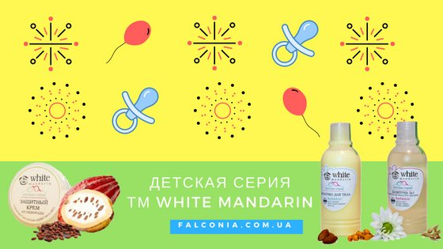
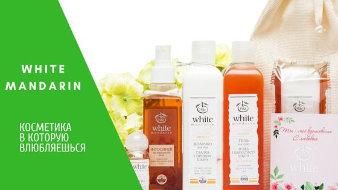

White Mandarin - натуральная косметика

Детская косметика
Мы часто не знаем, что лучше выбрать для своего малыша в силу неопытности, однако интуитивно мама все равно чувствует, что для ребенка наиболее подходящее это то, что создала сама природа.

Уход за волосами
Натуральные шампуни для волос White Mandarin купить можно для быстрой реанимации поврежденных и выпадающих, сухих или жирных, безжизненных и тусклых локонов.

Уход за кожей
Косметика White Mandarin lik была разработана на основе 2-х активных компонентов: морских водорослей и проросших зерен злаковых.
Beauty-советы
Советы
Текст....
О косметике
Текст....
Интересное
Текст....